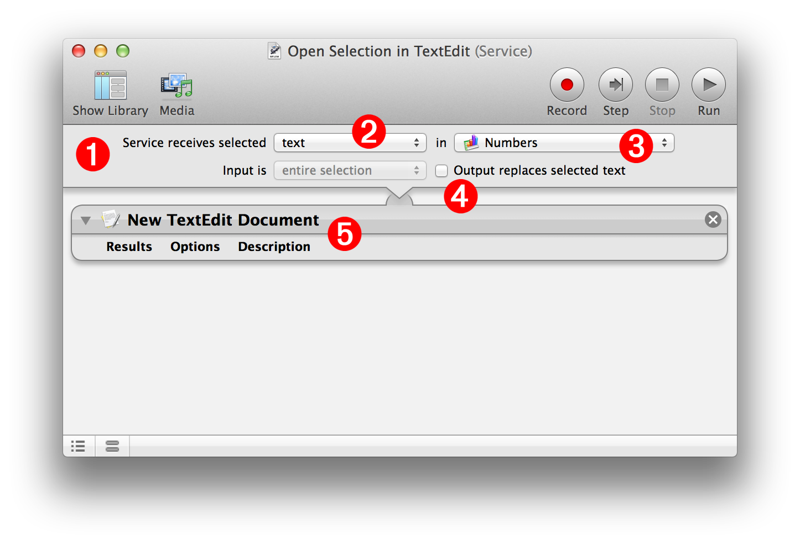
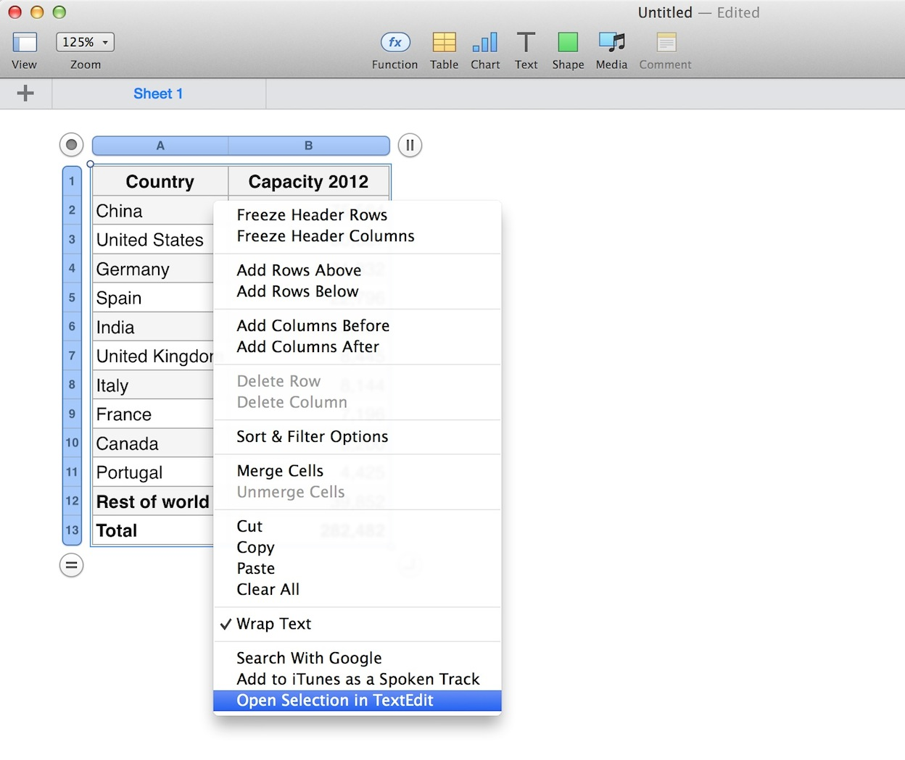
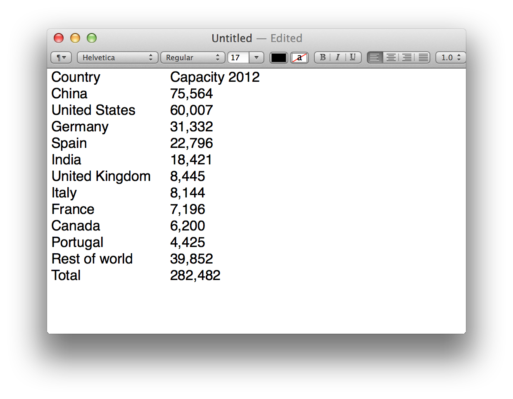
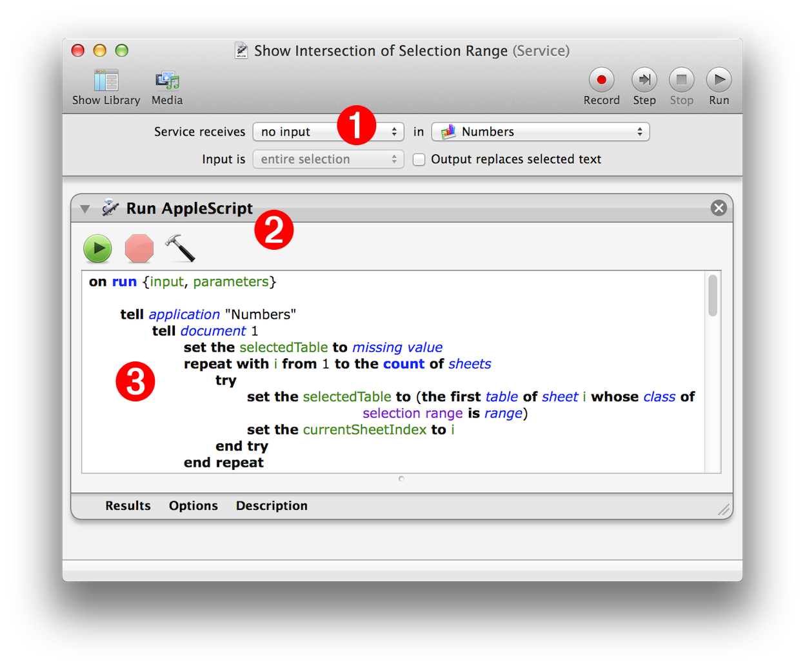
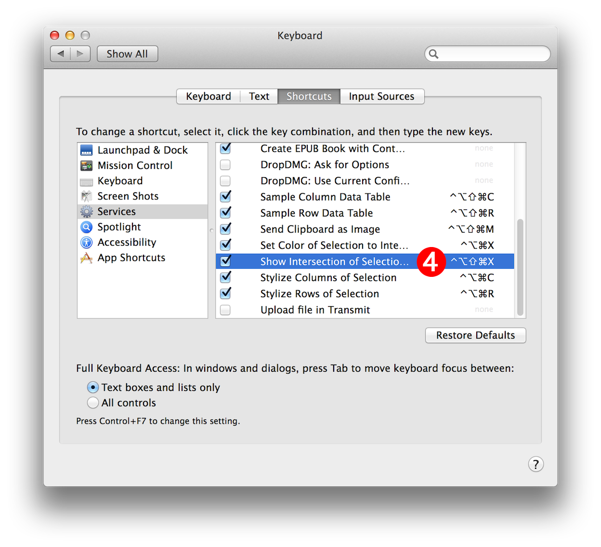

Numbers 3.1 adds support for system text services. With this version, the services component of the application contextual menu becomes active, when text is selected in a table or in a text container on a sheet.
You can use Automator to easily create text-based services that can extract, process, and even replace the selected data. The illustration and callouts below describe a simple example Automator service workflow, that moves the selected data from Numbers to a new document in the TextEdit application.
For more information on Services, and how they are created and used, watch this short video.
Creating an Automator Service for Numbers

DO THIS ►Begin by creating a new Automator workflow document, choosing Service as the template type for the workflow.
(1) Input Banner The input bar at the top of an Automator service workflow determines the type of data supported as input to the workflow. Since Automator service workflows are contextual, the input choice also determines when the service will appear on the application’s contextual menu.
(2) Input Data Type Popup Menu The selection of this menu determines the data type used for the input of the workflow. For use with Numbers, set the popup to text.
(3) Target Application Popup Menu Choose the application in which this service should be available. Select the Numbers application from the popup menu.
(4) Return Workflow Output Select this checkbox if you want the results of the workflow to replace the current selection in the target application. NOTE: Numbers currently does not support writing workflow data back into the selection.
(5) Automator Action From the Automator Action Library, add the New TextEdit Document action to the workflow. Note the connection between the input data bar and the top of the action, to indicate that the input data will be passed to the action as input.
DO THIS ►Save the workflow and it will be automatically installed into the user Services folder located in the user Library folder.
Running the Service
Once the Automator service workflow file has been saved it will become available within Numbers.
DO THIS ►To run the service with table data, select the cells in the table whose data you wish to transfer into a new TextEdit document. (⬇ see below )

DO THIS ►To run the service, access the Numbers contextual menu by clicking in the selection while holding down the Control key (⌃), and choose the new service from the Services list at the bottom of the menu.
The service will execute and switch to TextEdit where a new document will be created with selected table cell content as tabbed data. (⬇ see below )

NOTE: For an overview of Automator, watch this short video.
You can incorporate the power of Numbers AppleScript support with integrated functionality of Services, to deliver keystroke-activated automation tools, based on your favorite scripts.

(1) No Input Required • Create a new service workflow, and set the service input type to be no input. Of course, set the target application to be Numbers.
(2) The Run AppleScript Action • From the Automator Action Library, add the Run AppleScript action to the workflow. This action, and the Run Shell Script action, are designed to allow workflow creators to allow scripts to interact with the workflow during its execution.
(3) Add the Script • Add your AppleScript script into the edit pane of the Run AppleScript action. Since the workflow does not require input, you can test the script by clicking the Run button in the action view.
(4) Assign Shortcut • (⬇ see below ) In the Services category in the Shortcuts tab of the Keyboard system preference pane, select the created service, and assign it a keyboard shortcut.

You can now invoke the power of your favorite Numbers scripts, with keyboard shortcuts. Cool!